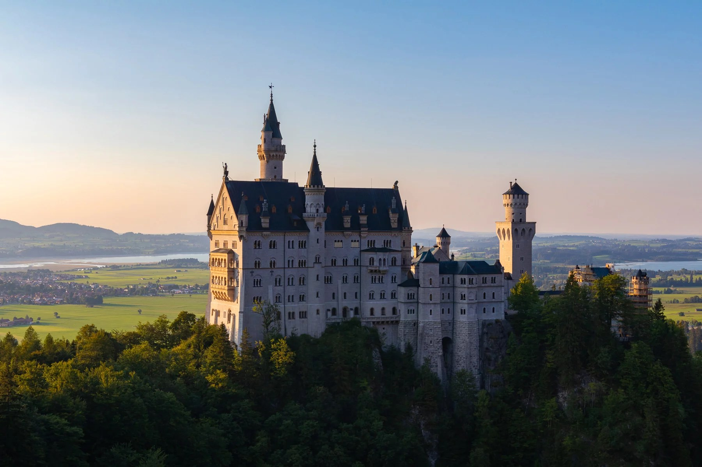
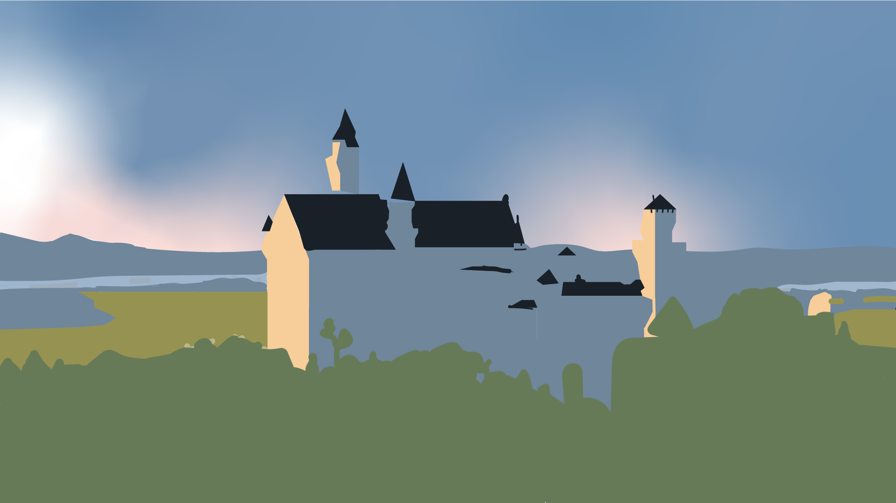

Original Photo

Illustrated Image

For this assignment, I decided to use an image of the Neuschwanstein castle in Bavaria, Germany. When I was choosing my landscape, the first thought in my head was this image of three houses with different aesthetics. However, I could find the image that I was looking for so I searched for a castle instead since I could not think of anything else. This was one of the first castles I found when I searched for ‘castle landscape’ and I chose it since I’ve seen this castle many times in some videos I had watched in the past. It also reminded me of Dracula's castle. For this assignment, my illustrated image didn't come out that great since this was a lot more complicated than expected, plus working with a mouse made it harder. For my illustration, I decided to transform it by just focusing on the general shapes in the image. By just focusing on the general shapes, I was able to highlight other key parts of the image such as which parts of the castle are hit by the sun and which are stuck in the shadows. I also highlighted the different colors in the sky, and I tried to mimic the way in which clouds affect how the sky looks. Finally, I made the details in the background of the castle simpler so that the castle is the focus and we aren't distracted by the mountains or the other houses in the landscape. Still, I found that the different towers in castle weren’t well highlighted which makes certain aspects (parts of the roof) of the illustration seem like they’re floating instead of showing that they are the roof of the towers.
Home